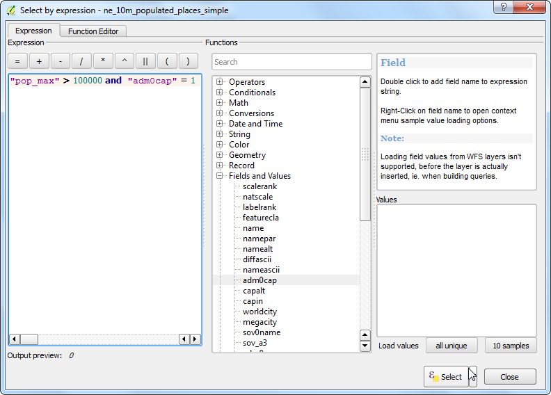

Werken met attributen
[ Download PDF A4 Letter ]
Gegevens van GIS bestaan uit twee gedeelten - objecten en attributen. Attributen zijn gestructureerde gegevens over elk object. Deze handleiding laat zien hoe de attributen te bekijken en basisquery’s op ze uit te voeren in QGIS.
Overzicht van de taak
De gegevensset voor deze handleiding bevat informatie over bewoonde plaatsen in de wereld. De taak is om een bevraging te doen en alle hoofdsteden in de wereld te zoeken die een bevolking hebben van meer dan 1.000.000.
Andere vaardigheden die u zult leren
Objecten van een laag selecteren met behulp van expressies.
Objecten van een laag deselecteren met behulp van de werkbalk Attributen.
Query bouwer gebruiken om een subverzameling van objecten van een laag weer te geven
Procedure
Open QGIS als u de gegevens eenmaal hebt gedownload. Ga naar .

Klik op Bladeren en navigeer naar de map waar u de gegevens heeft opgeslagen.

Zoek het gedownloade zip-bestand ne_10m_populated_places_simple.zip. U hoeft het bestand niet uit te pakken. QGIS heeft de mogelijkheid om zip-bestanden direct in te lezen. Selecteer het bestand en klik op Openen.

De geselecteerde laag zal nu worden geladen in QGIS en u zult vele punten zien die de bewoonde plaatsen in de wereld weergeven.

Klik met rechts op de laag en selecteer Open attributentabel.

Verken de verschillende attributen en hun waarden.

We zijn geïnteresseerd in de populatie van elk object, dus pop_max is het veld waar we naar zoeken. U kunt tweemaal op de kolomkop klikken om de kolom in aflopende volgorde te sorteren.

Nu zijn we klaar om onze query op deze attributen uit te voeren. QGIS gebruikt SQL-achtige expressies om query’s uit te voeren. Klik op Selecteer objecten m.b.v. reguliere expressie.

Vergroot, in het venster Select By Expression, het gedeelte Velden en waarden en dubbelklik op het label pop_max. U zult zien dat het wordt toegevoegd aan het gedeelte van de expressie onder in het venster. Als u niet zeker bent van de waarden in het veld, kunt u klikken op alle unieke om te zien wat de huidige aanwezige waarden in de gegevensset zijn. Voor deze oefening zoeken we naar alle objecten die een inwoneraantal hebben van groter dan 1.000.000. Voltooi dus de expressie zoals hieronder en klik op Selecteren.

Klik op Sluiten en ga terug naar het hoofdvenster van QGIS. U zult zien dat een subverzameling van de punten nu in geel wordt weergegeven. Dit is het resultaat van onze query en u ziet alle plaatsen uit de gegevensset waarvan de waarde van het attribuut pop_max groter is dan 1.000.000.

Het doel voor deze oefening is om de plaatsen te zoeken die hoofdsteden van landen zijn. Het veld dat deze gegevens bevat is adm0cap. De waarde 1 geeft aan dat de plaats een hoofdstad is. We kunnen dit criterium toevoegen aan onze eerdere expressie met behulp van de operator AND. Laten we onze query verfijnen om allen die plaatsen te selecteren die hoofdsteden zijn. Klik op de knop Objecten selecteren m.b.v. reguliere expressie in de attributentabel en voer de expressie in zoals hieronder en klik op Selecteren en dan Sluiten.
"pop_max" > 1000000 and "adm0cap" = 1

Ga terug naar het hoofdvenster van QGIS. Nu zult u een kleinere subverzameling van punten zien geselecteerd. Dit is het resultaat van de tweede query en geeft alle plaatsen in de wereld weer die hoofdsteden van landen zijn en ook een inwoneraantal hebben dat groter is dan 1.000.000. Als we nog wat meer analyses zouden willen uitvoeren op deze subverzameling, zouden we deze selectie kunnen vastzetten. Klik met rechts op de laag ne_10m_populated_places_simple en selecteer Eigenschappen.

Scroll, op de tab Algemeen, naar beneden naar het gedeelte Deelverzameling objecten. Klik op Querybouwer.

Voer dezelfde expressie in als die welke u eerder invoerde en klik op OK.
"pop_max" > 1000000 and "adm0cap" = 1

Terug in het hoofdvenster van QGIS zult u zien dat de rest van de punten verdwijnt. U zou nu een andere analyse op de deze laag kunnen uitvoeren en dan zullen alleen de objecten die voldoen aan onze expressie worden gebruikt. Het zal u opvallen dat de punten nog steeds geel worden weergegeven. Dit is omdat zij nog steeds geselecteerd zijn. Zoek de knop Objecten uit alle lagen deselecteren op de werkbalk Attributen en klik er op.

U zult zien dat de punten nu gedeselecteerd zijn en in hun originele kleur worden weergegeven.